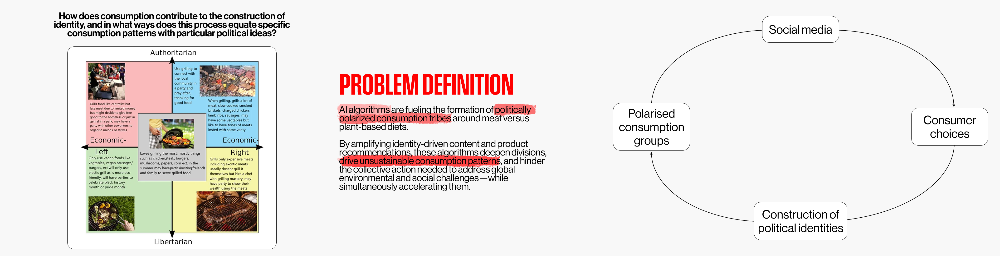
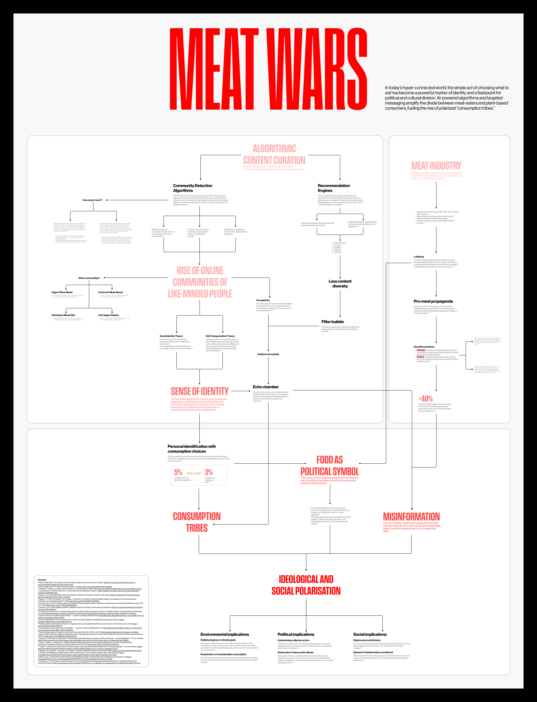
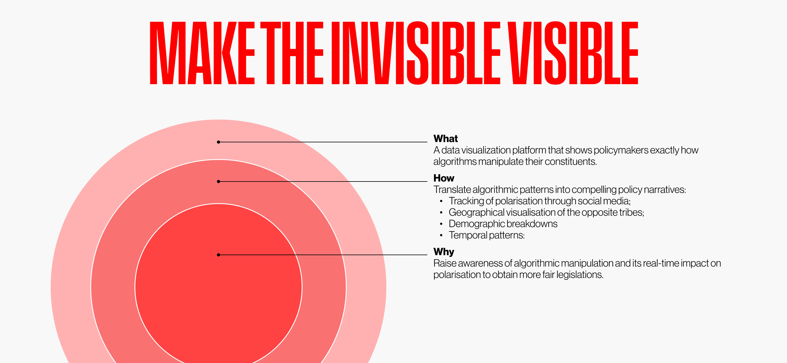

Meat Wars May 2025 - Jul 2025
Meat Wars | How algorithms drive polarization in
the meat vs. plant-based debate is a research project that investigates the relationship between social media algorithms, meat consumption, and political identity. The resulting output is a system map and a design concept, that will be developed in the future.
Meat Wars explores the relationship between algorithms, meat consumption and political identities. More specifically, it explores how algorithms used on social media influence our dietary choices and, consequently, our political views related to them. This, in turn, is leading to the formation of polarised consumption groups that are having an unexpected impact on our environment and society.
My initial idea was to focus on how consumption contributes to the formation of identity and how identities equate to specific political ideologies. I started from the premise that consumption and identity are closely linked and mutually influential. This manifests itself in various aspects of identity, including the political dimension: the consumption of particular items is frequently linked to specific political leanings.
I decided to focus on the political identities connected to food choices, especially whether people eat meat or plant-based proteins. The choice around this type of consumption is closely linked to political beliefs, and it has a very noticeable impact, both on the environment and on society.
My initial idea was to focus on how consumption contributes to the formation of identity and how identities equate to specific political ideologies. I started from the premise that consumption and identity are closely linked and mutually influential. This manifests itself in various aspects of identity, including the political dimension: the consumption of particular items is frequently linked to specific political leanings.
I decided to focus on the political identities connected to food choices, especially whether people eat meat or plant-based proteins. The choice around this type of consumption is closely linked to political beliefs, and it has a very noticeable impact, both on the environment and on society.

I organised my research as I proceeded with it, since effective communication and storytelling were as important as the content itself. From the outset, the research addressed three main topics: algorithms, the meat industry and the resulting impact. Social media algorithms—specifically community detection systems and recommendation engines—create “consumption tribes” around dietary choices by clustering like-minded individuals and reinforcing their beliefs through curated content.

The meat industry has strategically exploited this dynamic, deploying misinformation campaigns that disparage plant-based alternatives and promote meat consumption. This algorithmic manipulation has transformed food choices into political symbols, creating polarized groups trapped in filter bubbles and echo chambers that undermine democratic debate, stall climate progress, and deepen social divisions at a global scale affecting millions.

Algorithms of Identity
Firstly, we need to understand how algorithms can affect the way we create our identity. When we talk about algorithms, we are referring to two types in particular: community detection and recommendation engines.
Community detection algorithms are used to detect people with common interests and keep them together. This is useful for social media as it increases engagement on posts and connections, creating an online community of similar people.
When we are part of a community, the sense of belonging becomes part of us. Communities require in-group and out-group dynamics, and the establishment of norms, habits and values. This leads to a sense of identification with the community based on what you like and dislike. At the same time, social media uses recommendation engines to filter content and show users relevant and interesting material.
Community detection algorithms are used to detect people with common interests and keep them together. This is useful for social media as it increases engagement on posts and connections, creating an online community of similar people.
When we are part of a community, the sense of belonging becomes part of us. Communities require in-group and out-group dynamics, and the establishment of norms, habits and values. This leads to a sense of identification with the community based on what you like and dislike. At the same time, social media uses recommendation engines to filter content and show users relevant and interesting material.
The Meat Industry's Strategic Response
However, what makes this phenomenon particularly concerning is how the meat industry has recognized and exploited these algorithmic dynamics. My research revealed that the industry has developed sophisticated propaganda strategies that work in tandem with social media algorithms to influence public perception. They employ two primary narrative approaches: disparaging alternatives to meat and dairy products, which accounts for 78% of their misinformation efforts, and enhancing the perceived benefits of meat and dairy consumption, representing 22% of their messaging.
This strategic misinformation campaign has proven remarkably effective. The data shows that over 40% of the U.S. public now believes that beef is better for the environment than plant-based alternatives, while only 34% hold the scientifically accurate opposite view. This represents a complete inversion of environmental reality, demonstrating how algorithmic amplification of industry messaging can fundamentally distort public understanding of critical issues.
This strategic misinformation campaign has proven remarkably effective. The data shows that over 40% of the U.S. public now believes that beef is better for the environment than plant-based alternatives, while only 34% hold the scientifically accurate opposite view. This represents a complete inversion of environmental reality, demonstrating how algorithmic amplification of industry messaging can fundamentally distort public understanding of critical issues.
The Resulting Polarization and Impact
The convergence of algorithmic content curation and industry manipulation has created what I term “consumption tribes”, polarized groups whose dietary choices have become political symbols. These tribes exist within filter bubbles and echo chambers, where members are isolated from diverse viewpoints and gradually lose trust in outside sources of information. The distinction between filter bubbles, where you don't hear the other side, and echo chambers, where you don't trust the other side, becomes crucial in understanding how misinformation spreads and solidifies.
This polarization extends far beyond individual food choices, creating a cascade of negative impacts across environmental, political, and social dimensions. Environmentally, we see stalled progress on climate goals and the perpetuation of unsustainable consumption patterns. Politically, this phenomenon undermines collective action and destroys the foundation for democratic debate. Socially, it creates stigma and division while facilitating the spread of misinformation and distrust. At a scale affecting millions of people globally, these algorithmic manipulation tactics are fundamentally reshaping how we understand our relationship with food, identity, and each other.
In short, AI algorithms are creating politically polarized consumption tribes around dietary choices at a global scale, with the meat industry strategically exploiting this dynamic to deepen social divisions, promote unsustainable consumption, and hinder collective environmental action.
This polarization extends far beyond individual food choices, creating a cascade of negative impacts across environmental, political, and social dimensions. Environmentally, we see stalled progress on climate goals and the perpetuation of unsustainable consumption patterns. Politically, this phenomenon undermines collective action and destroys the foundation for democratic debate. Socially, it creates stigma and division while facilitating the spread of misinformation and distrust. At a scale affecting millions of people globally, these algorithmic manipulation tactics are fundamentally reshaping how we understand our relationship with food, identity, and each other.
In short, AI algorithms are creating politically polarized consumption tribes around dietary choices at a global scale, with the meat industry strategically exploiting this dynamic to deepen social divisions, promote unsustainable consumption, and hinder collective environmental action.
Theory of Change
There's an issue with AI algorithms fueling politically polarized consumption tribes around meat versus plant-based diets at the scale of millions of people globally. The meat industry is further exploiting this in its favor.
This has the impact of deepening social divisions, promoting unsustainable consumption patterns, and hindering collective action on environmental and social challenges.
This has the impact of deepening social divisions, promoting unsustainable consumption patterns, and hindering collective action on environmental and social challenges.

Design Concept
My design idea is aimed primarily at policymakers and regulators involved in the meat industry — people who can translate data into policy action and raise public awareness. The secondary audience includes think tanks, advocacy groups, NGOs and academic institutions. These organisations will act as trusted intermediaries, legitimising the research findings, amplifying the message through their established networks and providing the credibility needed to influence policy decisions. These organisations are crucial in bridging the gap between raw data and political action. They translate complex algorithmic patterns into compelling policy narratives that resonate with lawmakers, who may lack technical expertise, but understand constituent concerns and democratic threats.
links
tags